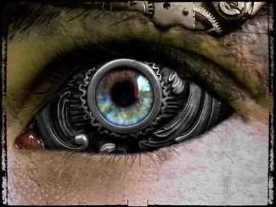

|
|
İNSAN GÖZÜ KAÇ MEGAPİKSELDİR? Öncelikle şunu belirtmekle başlamak istiyorum, insan gözü analog bir yapıdır ve dijital bir terim olan piksel boyutuyla ölçülmesi tam olarak mümkün değildir. Beyindeki görme merkezi gözlerden gelen ışık bilgisini aynen bir film perdesi gibi algılayamaz. Beyin gelen ışık bilgisini yorumlayarak görüntü oluşturur. Bu görüntü gözden beyne giden sinir hücrelerinin yani nöronların hızına bağlı olarak sürekli yenilenir. Örneğin bunu FPS(frame per second) değeri olarak göz önüne alırsak, bir video filmindeki 30FPS değeri gözümüzün görüntüyü tümüyle akıcı olarak görmesi için yeterlidir. Fakat bu olay, insan gözünün 30FPS olduğu anlamına gelmez. İnsan gözünün de belli bir eşik değeri vardır ve o değerden daha hızlı geçen bir cisme baktığında onun hareketini yakalayamaz ve hiçbirşey geçmemiş gibi görür. Günümüzde kullanılan yüksek çekim hızına sahip kameralar kullanılarak bir merminin hareketi milisaniye mertebesinde rahatlıkla incelenebilmektedir. İnsan gözünün hızı için basit bir test yapabiliriz. Öncelikle CRT(tüplü) bilgisayar monitörünüzün dikey tarama frekansını 60 Hz’e getirin. Bunun için, masaüstüne sağ tıklayıp özellikler > ayarlar > gelişmiş > monitör sekmelerini takip edip Hz ayarlarına ulaşabilirsiniz. 60 Hz’e getirdikten sonra ekrana 30cm mesafeden bakarken, monitörün yan tarafında bir nesneye odaklanın ama göz ucuyla da monitörü görün. Normalde düz bakarken hissetmediğiniz ekran yenilemesinin nasıl yukardan aşağıya taranarak sayfa sayfa geçtiğini bu şekilde farkedeceksiniz. Eğer normal bakarken de 60 Hz’i farkediyorsanız bunu bir de 75 Hz’de deneyin. Kendim 75 Hz’e kadar farkedebiliyorum fakat 85 Hz ve üstünde artık sayfa sayfa geçişleri göremiyorum. Gözün bu hızı kişiden kişiye farklılık gösterebilir. Gözleriyle sürekli detaylı ve hareketli şeyleri takip eden ve işi gereği yüksek dikkatle çalışan kişilerde daha hızlı göz refleksleri görülür. Gözümüzün ışık algılayıcılarının bulunduğu retina, sinirsel yapıdan oluşan bir zardır. Retinadaki ışık algılayıcıları, sayısal kameraların algılayıcılarında olduğu gibi sayılabilir büyüklüklerdir. Hatta, retinanın çukur kısmında(fovea) bu algılayıcıların sayıları diğer bölgelere oranla daha fazladır ve retinanın üzerine düşen ışık beyine sıkıştırılarak iletilir. İşte bu nedenle gözümüz bazen bize oyun oynar ve şekilleri olmadığı gibi görürüz. Gözümüzdeki ışık algılayıcı hücre sayısı(ya da piksel deyin) belli bir kritik değerin üstünde olduğu sürece görme kalitesi etkilenmez. Çünkü görüntüyü beyin tamamlar. Hatta tek gözümüz olmasa bile görüntü çözünürlüğümüz azalmaz, yalnızca derinlik hissimiz bir miktar kaybolur. Retina “dekolmanı” olarak adlandırılan ve göz içindeki ışık hücrelerinin büyük kısmının harap olduğu durumlarda bile görüntünün bir kısmını eksik görmeyiz. Bunu şöyle benzetebiliriz: Elinizdeki kameranın merceğinin yarısını kapatıyorsunuz ama ekranda görüntüyü hala tam görüyorsunuz; çünkü kameranın işlemcisi eksik kısmı tamamlıyor. Gözün görme kapasitesinin megapiksel olarak ifade edilebilmesi için, gözdeki reseptörleri piksel olarak düşünüp bir sahneyi beynin hangi detay seviyesinde oluşturabildiğini test etmek gerekir. İnsan gözü küçük bir organdır ve üzerine gelen ışığın çok az bir miktarı ile bütün herşeyi yapar. Fakat yüksek megapiksel kameraların mercekleri oldukça büyüktür ve buna bağlı olarak karanlık bir sahnede insan gözüne kıyasla çok daha fazla aydınlanmış alan görürler. Şunu net olarak söylemek mümkündür ki, eğer göz büyüklüğünde bir mercekle en yüksek megapiksel oranını alıp fotoğrafı çekip daha sonra insanın aynı manzaraya bakarak gördüklerini karşılaştırırsak eminim ki insan gözü daha fazla detayı algılayıp tanımlayabilecektir. Dijital makinenin çektiği fotoğraf ise, zoom yapılmadan insanın gördüğüne denk biçimde görüntülenip incelenirse çok daha az detay yakalayabildiği anlaşılacaktır. Bu nedenle insan gözü yapay merceklerin görüntüsüyle kıyaslanamayacak kadar mükemmel yaratılmış bir organdır. Ama dijital bir veri olan megapiksel olarak ifade edilebilir. Bunun hesaplaması yukarıda bahsettiğim şartlar sağlanırsa, yaklaşık olarak bir değer ortaya koyularak gerçekleştirilebilir. Ama megapiksel teriminin aslında bir sahneden alınan görüntünün kaç piksel ile görüntülendiğini ifade eden bir kavramdan başka birşey olmadığını aklımızdan çıkarmamamız gerekir. Tabiki ne kadar fazla piksel olursa o kadar detaylı görünecektir fakat bunun insan gözüne denk gelen oranıyla kıyaslamak için, konuyu başlıca bir araştırma konusu olarak ele alıp laboratuvar şartlarında incelenmesi ve deneyler yapılması gerekir. |
||
| © 2017 nekibu - Designed by Osman Koç |

|